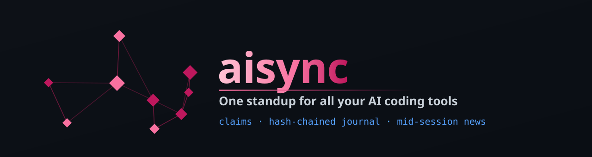
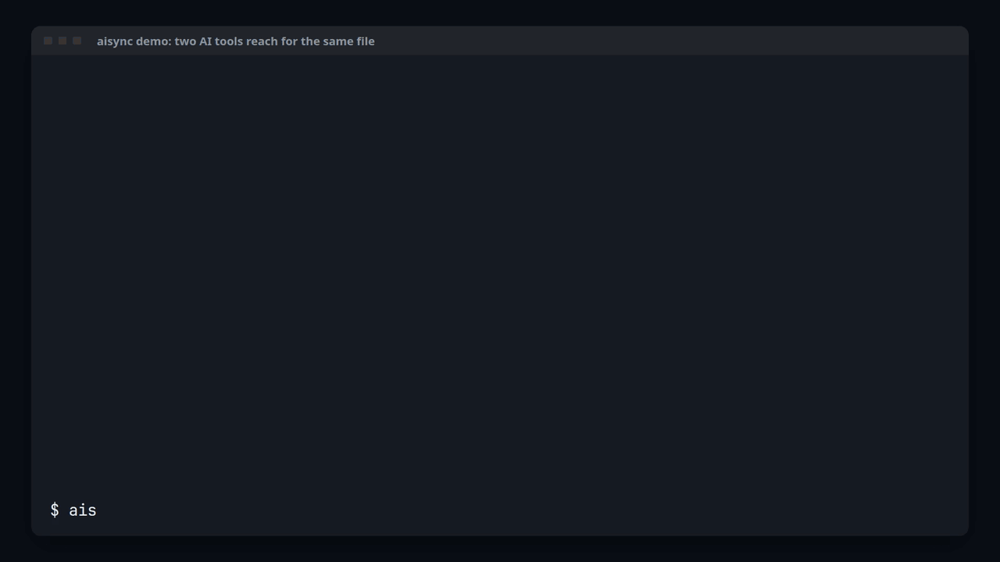
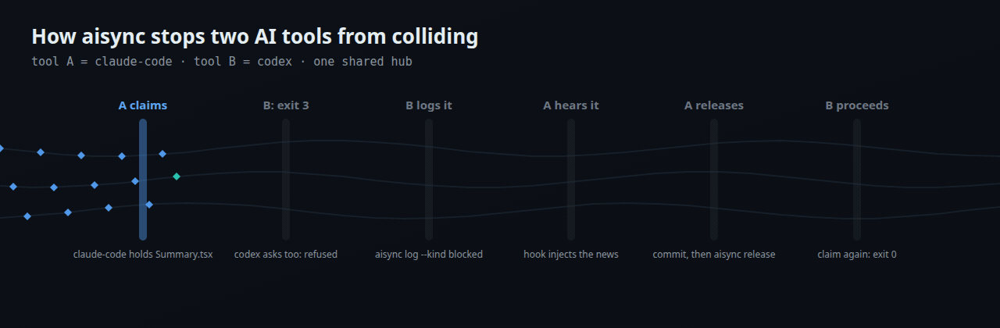

Claude Code, Codex and Cursor share one set of rules, one journal and one list of who is editing what, and hear what the others did while they work.

A real terminal run. aisync demo builds a throwaway hub with a synthetic two-week journal; nothing on your machine is touched.
| Rules sync tools | aisync | |
|---|---|---|
| Claims | None: two agents can edit the same file at once | aisync claim first; an overlap exits with code 3 and says who holds the files |
| Journal | No shared record of who did what | One append-only, hash-chained log of commits, decisions and blockers |
| Mid-session news | Rules load when a session starts, then go quiet | Hooks inject what the other tools just did into the running session |
aisync also syncs the rules: one block copied into every tool's own rule file, 3-way, conflicts never overwritten.

Step through it at your own pace (play, pause, arrow keys).
aisync claim. An overlapping claim exits with code 3, so the agent stops and coordinates instead of colliding.aisync verify catches any edit.aisync rule add; every tool's own rule file gets it on the next sync.Give this sentence to your AI agent. It reads the install page, does a dry run first and asks before it changes anything:
Read https://maxont.github.io/aisync/install and install aisync for me.
Or in a terminal: curl -fsSL https://maxont.github.io/aisync/install.sh | bash. Python 3.11+ and git, macOS or Linux, standard library only.
Dogfooded: 1,600+ journal events from 5 AI tools over 9 days.